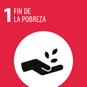

Objetivo de Desarrollo Sostenible 1: Fin de la Pobreza
El primer Objetivo de Desarrollo Sostenible (ODS) de las Naciones Unidas es poner fin a la pobreza en todas sus formas en todo el mundo. Este objetivo busca garantizar que todas las personas, especialmente las más vulnerables, tengan acceso a recursos económicos, servicios básicos y oportunidades para mejorar su calidad de vida.
Para lograr este objetivo, es esencial implementar políticas que promuevan el crecimiento económico inclusivo y sostenible, así como la creación de empleo decente. Además, es crucial fortalecer la protección social para todos, incluyendo medidas para mitigar los riesgos y vulnerabilidades que enfrentan las personas en situación de pobreza.
Estadísticas Globales de Pobreza
| País | Pobreza (%) | Acceso a Servicios Básicos (%) | Ingreso Promedio (USD) | Índice de Desarrollo Humano |
|---|---|---|---|---|
| País A | 25 | 80 | 15,000 | 0.75 |
| País B | 15 | 90 | 20,000 | 0.85 |
| País C | 30 | 70 | 10,000 | 0.65 |
| País D | 20 | 75 | 18,000 | 0.80 |
| País E | 10 | 95 | 25,000 | 0.90 |
Cooperación Internacional
La cooperación internacional juega un papel fundamental en la erradicación de la pobreza. Los países desarrollados deben cumplir con sus compromisos de asistencia oficial para el desarrollo y apoyar a los países en desarrollo en sus esfuerzos por alcanzar el ODS 1.
Es esencial fomentar alianzas y colaboraciones entre gobiernos, organizaciones no gubernamentales y el sector privado para implementar programas efectivos y sostenibles.
Políticas de Protección Social
Fortalecer los sistemas de protección social es crucial para asegurar que todas las personas tengan acceso a servicios básicos y apoyo en situaciones de vulnerabilidad. Esto incluye la implementación de programas de asistencia social, seguros de salud y pensiones.
Las políticas de protección social deben ser inclusivas y adaptarse a las necesidades específicas de cada comunidad para ser efectivas.